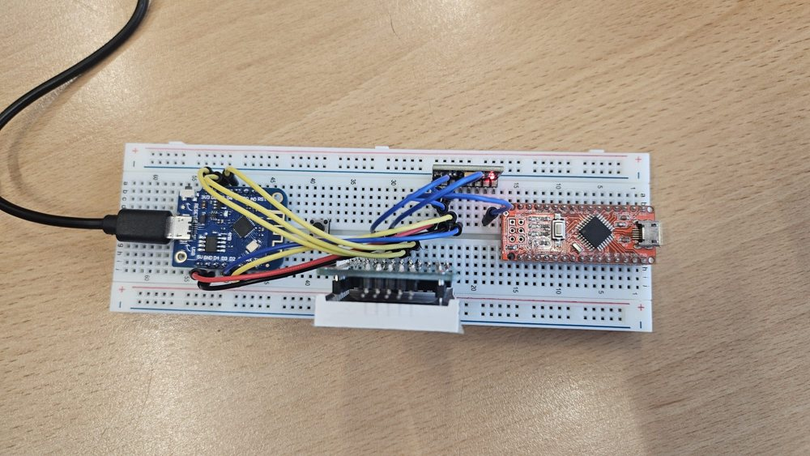
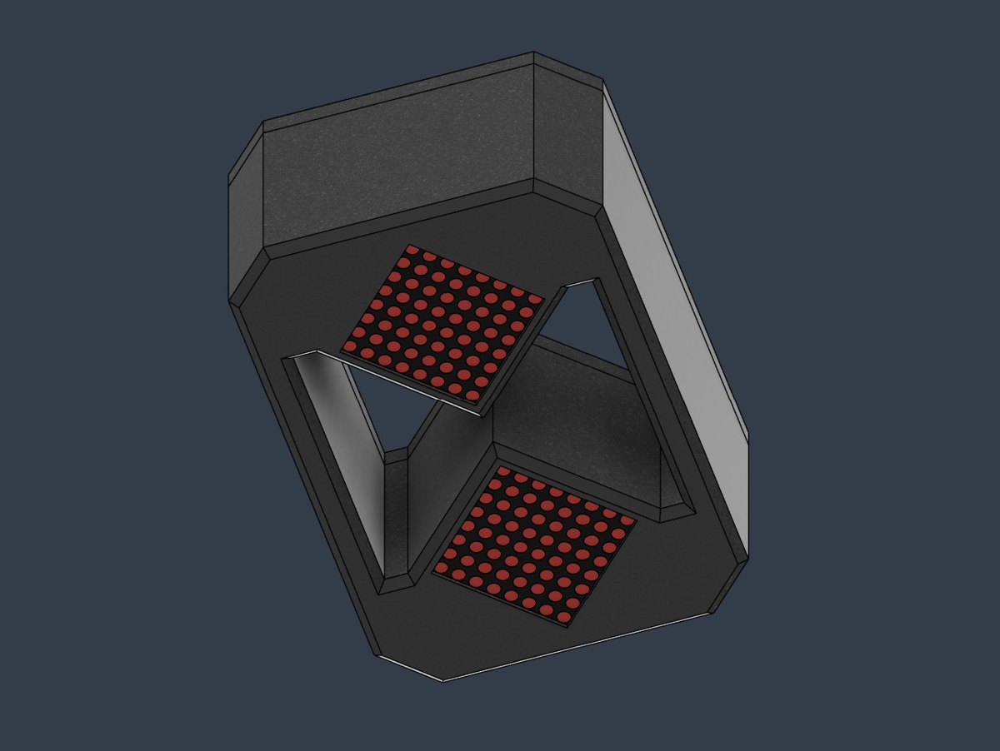

Workshops in der Co-Creation Corner
Unsere SCC-Mitglieder zeigen Mittelschülerinnen und Mittelschülern als Peer-Teacher, wie man programmiert, konstruiert, druckt und lötet. Am Ende hält jede Gruppe eine eigene TimeFlow in der Hand.
Die digitale Sanduhr: 128 LEDs, ein Lagesensor und ein Akku im 3D-gedruckten Gehäuse. Von Schülerinnen und Schülern entwickelt, als Bausatz zum Nachbauen.
Zwei LED-Matrizen stehen schräg übereinander, Ecke an Ecke. Wo sie sich berühren, ist der Hals der Sanduhr.
Ein Lagesensor misst die Schwerkraft. Dreht man die Uhr, weiß das Programm sofort, wohin der Sand fallen muss.
Ein Korn fällt nach unten, wenn darunter Platz ist, sonst rutscht es schräg zur Seite. So entstehen echte Sandhaufen.
Durch den Hals darf immer nur ein Korn. 60 Körner im Sekundentakt ergeben genau eine Minute.
Alles sind Standardteile aus dem Elektronikhandel. CAD-Dateien, Verdrahtung und Schritt-für-Schritt-Anleitung liegen offen auf GitHub.

März 2026: Der erste Prototyp läuft. Kippt man das Steckbrett, rieselt der LED-Sand mit.


Der Code der Workshop-Version wird aufgeräumt, kommentiert und mit Schaltplan auf GitHub gestellt.
Die Dokumentation geht online, damit andere Schulen TimeFlow nachbauen können.
Unsere SCC-Mitglieder zeigen Mittelschülerinnen und Mittelschülern als Peer-Teacher, wie man programmiert, konstruiert, druckt und lötet. Am Ende hält jede Gruppe eine eigene TimeFlow in der Hand.
Der Sand rieselt zum ersten Mal über zwei LED-Matrizen, die ersten Gehäuse entstehen im CAD.
13 Schülerinnen und Schüler aus Elektrotechnik, Mechatronik und Maschinenbau starten den Science Club.
TimeFlow – ein Projekt des Science Club der HTL1 Lastenstraße Klagenfurt